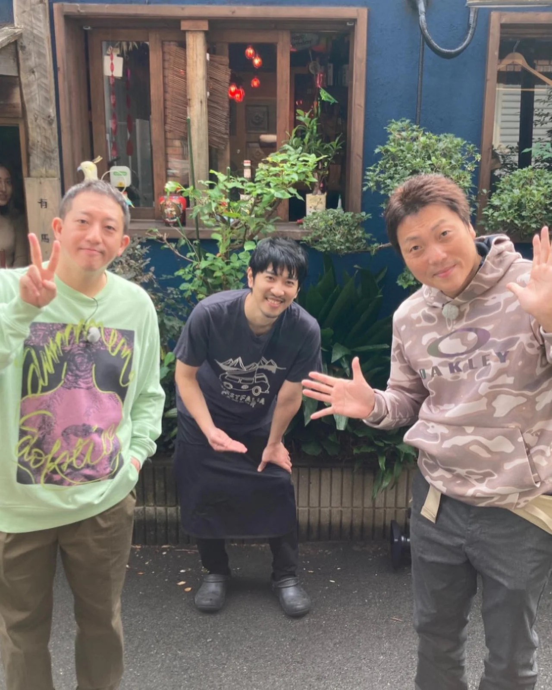
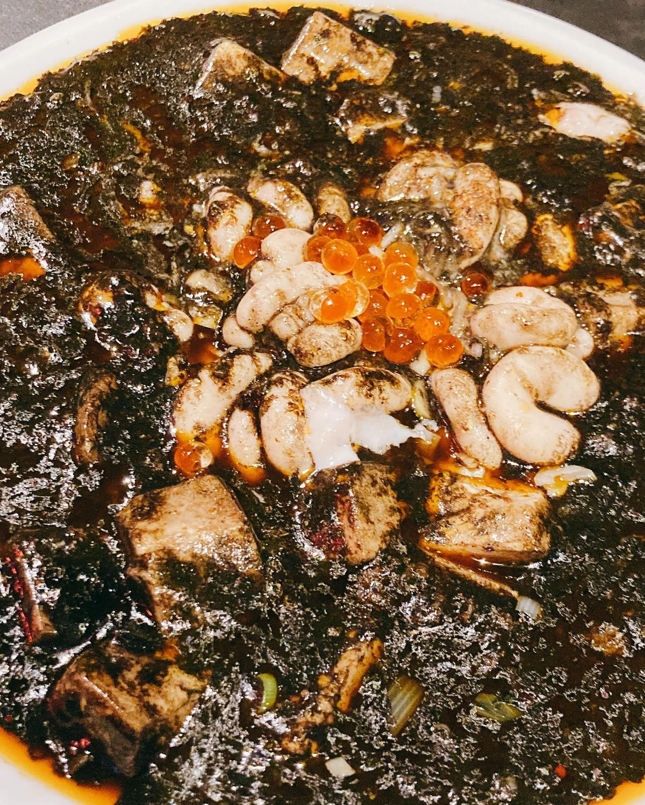

2020年12月16日
1月１３日放送の、


1月１３日放送の、 『今ちゃんの実は、、、』 にでます！！！ 海鮮ブラック麻婆でます！！ 健康ボーイズの八木さん来てくれました！ 八木さんの前で、僕が八木さんのギャグのスプーンやらせてもらいました！ 放送はきっと僕がめちゃくちゃ緊張してるので、 見てわろてください！ #サバンナ #今ちゃんの実は #高橋さん #八木さん #中華バル#中華#中華料理#福島区グルメ#路地裏#B級グルメ#中国#チャイニーズ#路地裏チャイニーズ有馬#有馬#シュウマイ#餃子#点心#フォローミー#followme